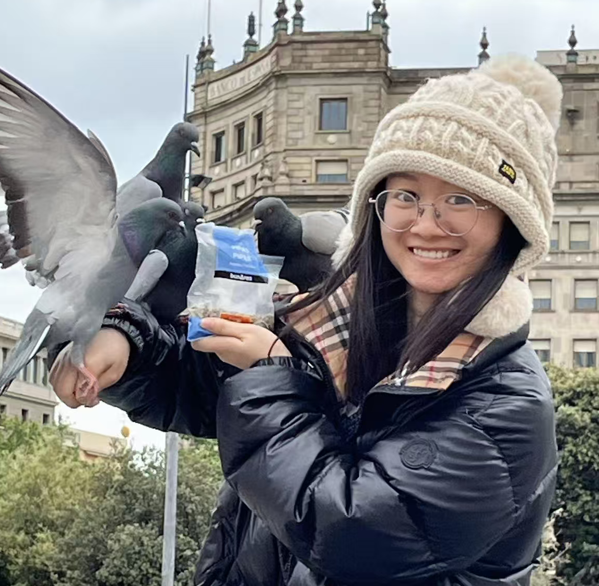

Runcong Zhao
Senior Research Scientist in LLMs
King's College London
I joined King's College London in February 2023, where I am currently a Senior Research Scientist in Large Language Models, working on the EMBRACE project (Enhanced Maternal and Baby Results with AI-supported Care and Empowerment).
I hold a PhD in Computer Science and an MSc in Data Science from the University of Warwick, supervised by Prof. Yulan He and Dr. Lin Gui. I also hold a BA in Mathematics from the University of Cambridge.
My research interests include:
- Personalised Agents: AI for Health, Education, and Entertainment; Multimodal Enhanced Interaction; Simulation of Human Social Interactions.
- LLM Reasoning: Conflict-aware Reasoning; Opinion Mining; Logical Reasoning; Information Extraction.
News
- 2026.06Paper accepted at ACL 2026: SymbolicThought (System Demonstration track).
- 2026.05Panel discussion at SLCPS Away Day 2026: Future Scientists and Clinicians — what do students need from us for an AI-enabled world?
- 2026.05Three papers accepted at ICML 2026.
- 2026.01Co-organised the AAAI 2026 Workshop on Personalization in the Era of Large Foundation Models.
- 2025.09Three papers accepted at EMNLP 2025: Concise-SAE, LearnLens, and AERA Chat.
- 2025.08Joined the Department of Population Health Sciences at King's as Inkfish Senior Research Scientist.
- 2025.07Invited talk at WAIC 2025 (World Artificial Intelligence Conference).
- 2025.06Poster at London Tech Week 2025: LearnLens.
- 2025.05Paper accepted at ICML 2025 as Spotlight: Navigating Solution Spaces in LLMs through Controlled Embedding Exploration.
- 2024.08Co-organised the 10th SIGHAN Workshop at ACL 2024.
- 2024.05Two papers accepted at ACL 2024: OpenToM and Complex Relationships in Detective Narratives.
- 2024.02NarrativePlay accepted at AAAI 2024 and EACL 2024.
- 2023.10Invited talk at the University of Cambridge on Interactive Narrative Understanding.
- 2023.05CONE accepted at SIGIR 2023. PANACEA accepted at EACL 2023.
- 2023.02Joined King's College London as Research Associate.